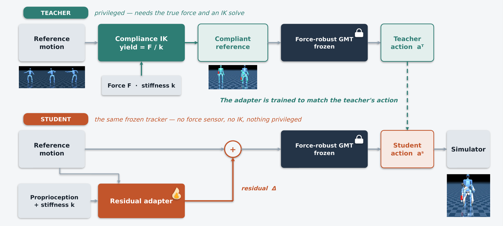
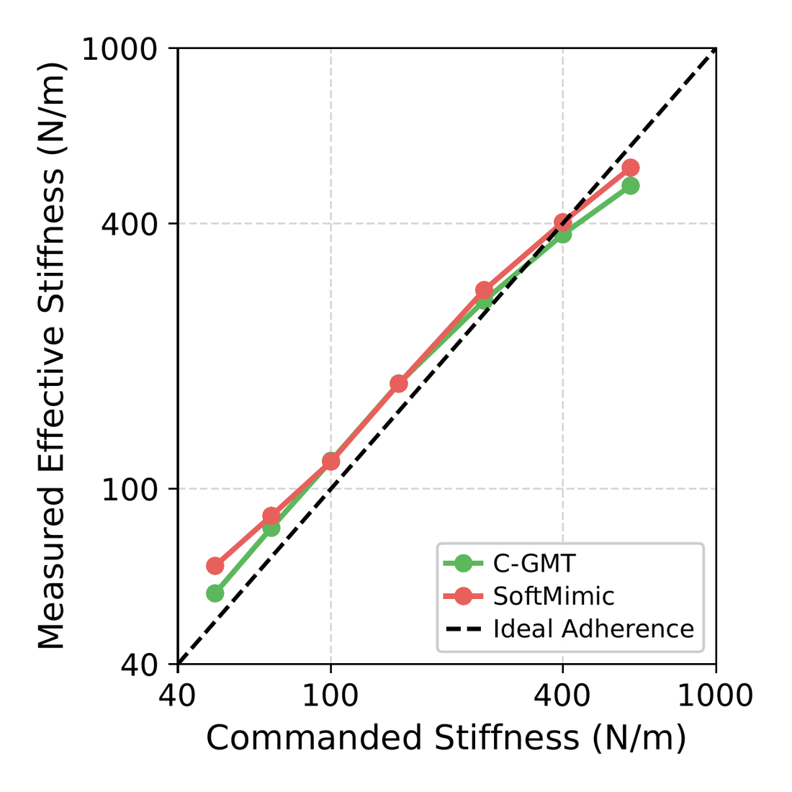

We propose Compliant GMT (C-GMT), a modular framework for full-body compliant responses in general motion tracking. As humanoid robots move into real world deployment, they not only need to perform any motion but also respond safely and robustly to interaction forces. Existing general motion tracking policies can imitate diverse motions but are trained to be stiff, leading to unexpected and unsafe behaviors under disturbance. Prior work in compliant humanoid control trades off compliance and generality. There exist examples of full-body compliant responses, but these are heavily curated to single-reference policies. On the other hand, general motion trackers (GMT) are trained to rigidly imitate massive motion capture datasets. Our key insight is to leverage the generality of pretrained GMTs for motion tracking while introducing compliance from a residual adapter that conditions on a history of proprioception. This enables our approach, C-GMT, to achieve both general motion tracking and whole-body compliant responses. Compared to state-of-the-art general motion trackers and single-motion compliant policies, C-GMT demonstrates competitive performance in both motion tracking accuracy and compliance adherence. We further demonstrate improved safety, robustness, and error tolerance in simulation and real-world G1 experiments.
General motion trackers are trained to closely follow reference motions, even under external disturbances, making them stiff. While this enables accurate motion tracking, it can also cause robots to resist unexpected contact, exerting large forces instead of yielding.
Existing approaches to compliant humanoid control face a tradeoff between generality and compliance. Methods that achieve whole-body compliant responses are limited to individual motions or simplified motion commands, while general motion trackers with compliance restrict their responses to the upper body.
We distill the compliance into a residual adapter, preserving the generality of a pretrained motion tracker while enabling whole-body compliant responses.

Compliance without sacrificing generality. C-GMT tracks diverse, dynamic whole-body motions, from teleoperation to dance.
Even during fast, dynamic motion, C-GMT gives way when someone holds or pulls on it. A stiff tracker on the same motion fights back.
Different tasks require different levels of compliance. C-GMT enables adjustable robot stiffness while accurately achieving the desired response.

C-GMT improves safety and robustness, allowing the robot to yield to unexpected pushes and pulls and continue performing its task.
Compliance can also improve manipulation, making robots more robust to controller errors and enabling contact-rich tasks like opening doors and inserting objects.
C-GMT makes physical interaction more natural, whether you're moving the robot out of the way or simply having fun interacting with it.
Push it, pull it, play with it.
Compliant GMT: Making General Motion Tracking Compliant via Residual Reference Adaptation
Venki Parsuram, Michelle Wang, Jin-Hyuk Hong, Pulkit Agrawal
@misc{cgmt2026,
title = {Compliant GMT: Making General Motion Tracking
Compliant via Residual Reference Adaptation},
author = {Parsuram, Venki and Wang, Michelle and Hong, Jin-Hyuk and Agrawal, Pulkit},
year = {2026}
}
This research was financially supported by the Ministry of Trade, Industry, and Energy (MOTIE), Korea, under the “Global Industrial Technology Cooperation Center program” supervised by the Korea Institute for Advancement of Technology (KIAT) (Grant No. P0028435).